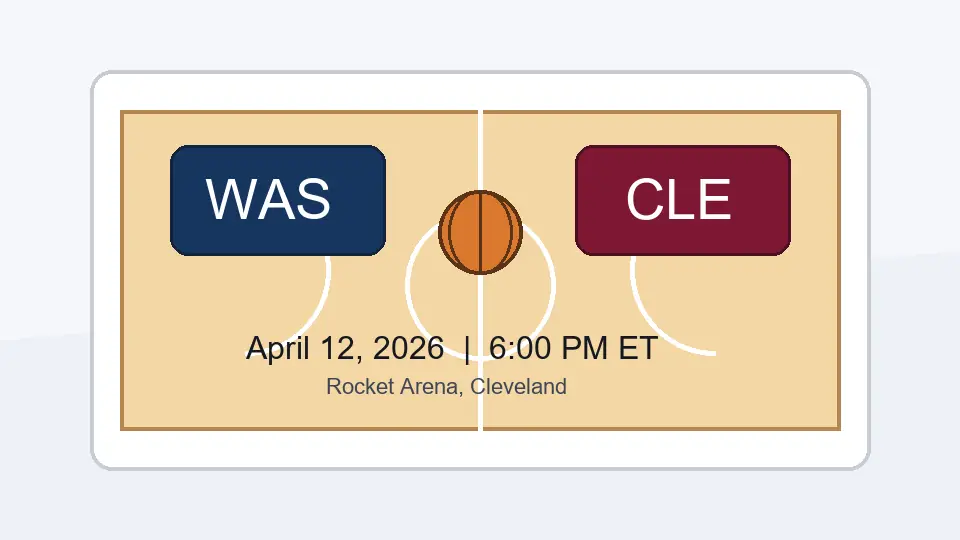

Quick read
My read on this game is simple: Cleveland needs to stay healthy and sharp, while Washington needs to compete with better intent than its record suggests. That makes rotation decisions and effort level more important than a normal midseason box-score preview.
Cleveland angle
Playoff priorities change the tone
The Cavaliers come into the finale with the bigger picture already in view. For a playoff team, the final game can become a balancing act: keep rhythm, protect key players, and avoid turning a low-stakes night into an injury problem.
If Cleveland leans deeper into the bench, that does not make the game meaningless. It simply changes the evaluation. The important question becomes whether the second unit and role players keep the same defensive habits and pace that the team wants heading into the postseason.
Washington angle
One more chance to compete
Washington's season has been rough, and the Wizards are closing it against a team with much cleaner postseason direction. In a game like this, the practical goal is not a miracle storyline. It is professional effort, cleaner possessions, and giving young or available rotation players a final useful run.
That is why players such as Bub Carrington matter in the story. Reliability over a long season is not glamorous, but on a team that has struggled badly, availability and development minutes still carry value.
What to watch
Three game themes
- Cleveland's rotation management before the playoffs.
- Washington's guard play and shot quality.
- Whether the game keeps real energy after the first few minutes.
My expectation
More about tone than standings
This does not feel like a standings drama game. It feels like a final checkpoint. Cleveland wants control and health. Washington wants to avoid ending the season with another flat performance.